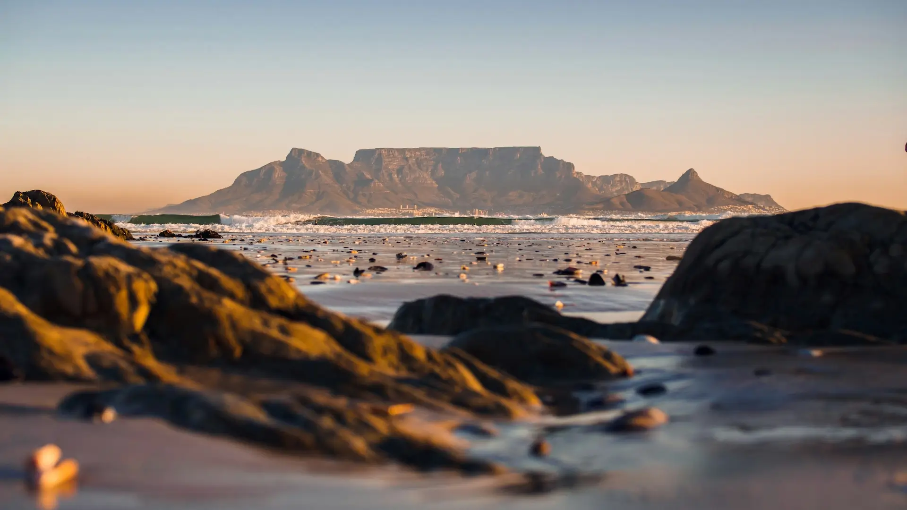

Data
- Country: South Africa
- Area: 1,221,037 sq km
- Population: 62,000,000
- Capital: Cape Town
- Official Languages: 11 official languages
- Currency: South African Rand (ZAR)
- Time Zone: UTC+2
- Calling Code: +27
- Internet TLD: .za
Weather
- Temperature: 12°C
- Conditions: Cloudy
- Wind: 18 km/h
- Wind Chill: N/A